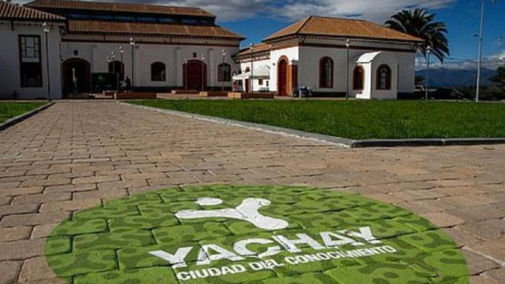

Yachay Tech

Yachay Tech (Universidad de Investigación de Tecnología Experimental Yachay) is Ecuador's first public research university focused on science and technology. It was founded in 2014 as the academic core of the "Yachay Knowledge City" project, a government initiative to build the country's first planned city dedicated to research, innovation, and technology transfer.
The university is located in San Miguel de Urcuquí, in the province of Imbabura, in a mountain valley in northern Ecuador. Its campus was designed to bring together academic buildings, research centers, and green spaces in a single, self-contained community.
Yachay Tech offers STEM-focused undergraduate programs delivered mostly in English, organized into different Schools such as Mathematical and Computational Sciences, Biological Sciences and Bioengineering, Chemical Sciences and Engineering, Physical Sciences and Nanotechnology, and Geological and Environmental Sciences. Students complete a shared foundational curriculum before specializing in their chosen program.
Because of its research-driven mission, the university places strong emphasis on faculty research, international collaboration, and hands-on laboratory work, aiming to position Ecuador as a growing hub for scientific innovation in Latin America.